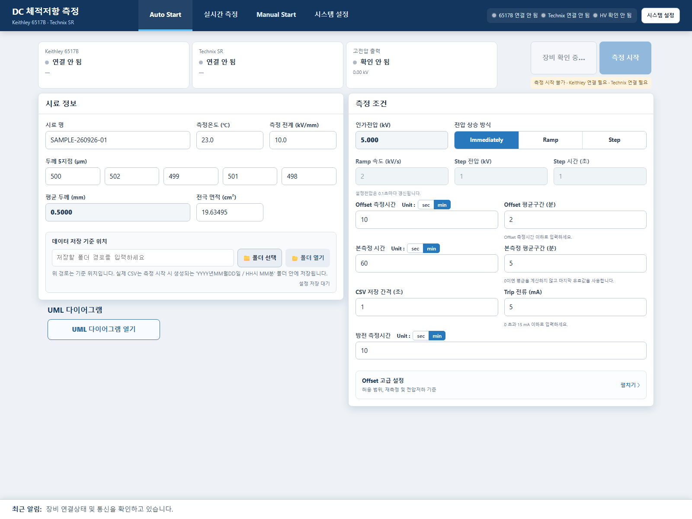

체적저항 측정 시스템
목차
- 안전 주의사항
- 설치 환경과 필수 드라이버
- 설치 및 최초 실행
- 화면 구성
- Auto Start 사용법
- 실시간 측정 화면
- Manual Start 사용법
- 시스템 설정
- CSV와 저장 폴더
- 문제 해결
1. 안전 주의사항
- 프로그램의 상태 표시와 소프트웨어 Trip은 물리적 인터록, Safe Lock, 비상정지 및 접지를 대체하지 않습니다.
- HV ON 및 전압 인가 전에 시험영역 통제, 접지, 배선, 전극 간격과 시료 상태를 작업자가 직접 확인하십시오.
- 시험 종료 또는 HV OFF 후에도 잔류전압이 존재할 수 있습니다. 장비 표시와 적절한 계측 절차로 안전 전압을 확인하십시오.
- 통신 단절, 장비 Fault, 비정상 소음·냄새·방전이 발생하면 장비의 물리적 비상 차단 절차를 우선 수행하십시오.
2. 설치 환경과 필수 드라이버
| 항목 | 요구사항 |
|---|---|
| 운영체제 | Windows 10/11 64비트 |
| 프로그램 창 | Microsoft Edge WebView2 Runtime |
| Keithley 연결 | NI GPIB-USB-HS 사용 시 NI-VISA 및 NI-488.2. NI MAX에서 6517B가 보여야 함 |
| Technix 연결 | USB-RS232 어댑터 제조사 드라이버. 현재 개발 환경은 Prolific 계열 사용 |
| 권한 | 설치 시 관리자 권한 권장 |
3. 설치 및 최초 실행
- NI-VISA/NI-488.2와 USB-RS232 드라이버를 설치하고 PC를 재부팅합니다.
체적저항 측정 시스템 1.2 설치.exe를 실행합니다.- 설치 폴더와 바탕 화면 바로가기 생성을 선택하고 설치를 완료합니다.
- 바탕 화면 또는 시작 메뉴에서 체적저항 측정 시스템을 실행합니다.
- 프로그램은 주소창 없는 독립 Windows 창으로 실행됩니다. 처음 실행할 때 Windows 보안 경고가 나타나면 조직의 보안정책에 따라 허용 여부를 확인하십시오.
%LOCALAPPDATA%\DCVolumeResistivity에 저장됩니다. 프로그램 업데이트나 제거로 사용자가 지정한 측정 CSV가 자동 삭제되지는 않습니다.장비 연결 확인
- Keithley 6517B의 GPIB 주소를 확인합니다. 예: 주소 3 →
GPIB0::3::INSTR. - Windows 장치 관리자에서 Technix USB-RS232 COM 포트를 확인합니다.
- 시스템 설정에서 통신값을 저장한 후 장비별 연결 버튼을 누릅니다.
- Technix는 연결 후 Remote 모드 ON을 적용합니다. Keithley는 GPIB REN으로 Remote 상태가 적용됩니다.
4. 화면 구성
| 탭 | 기능 |
|---|---|
| Auto Start | 시료·측정조건을 설정하고 Offset → 본측정 → 방전 자동 시퀀스를 시작 |
| 실시간 측정 | 단계, 경과시간, 전압·전류·Offset·체적저항, 그래프와 CSV 저장상태 확인 |
| Manual Start | Technix와 Keithley를 각각 독립 제어. Keithley만 연결해도 전류 측정 가능 |
| 시스템 설정 | COM/GPIB 통신과 Keithley 측정 조건 저장, 장비별 연결 수행 |

5. Auto Start 사용법
5.1 시료 정보
| 항목 | 설명 |
|---|---|
| 시료 명 | CSV 파일명에 사용됩니다. 파일명으로 사용할 수 없는 특수문자는 피하십시오. |
| 측정온도 (℃) | 측정 시작 시점의 입력값을 CSV 시험조건과 파일명에 기록합니다. |
| 측정 전계 (kV/mm) | 평균 두께와 곱하여 목표 인가전압을 계산합니다. |
| 두께 5지점 (µm) | 5개 값을 평균한 후 mm로 환산합니다. |
| 전극 면적 (cm²) | 사용자가 직접 입력하며 체적저항 계산에 사용합니다. |
| 데이터 저장 기준 위치 | 측정 시작 시 날짜/시간 하위 폴더가 생성되는 기준 폴더입니다. |
인가전압: 측정 전계(kV/mm) × 평균 두께(mm). 장비 한도인 40 kV를 넘으면 시작할 수 없습니다.
5.2 전압 상승 방식
| 방식 | 동작 |
|---|---|
| Immediately | 목표전압을 즉시 설정합니다. |
| Ramp | 입력한 kV/s 속도로 증가합니다. 설정전압은 고정 0.1초마다 갱신하며 목표값을 초과하지 않습니다. |
| Step | 입력한 Step 전압만큼 올리고 Step 시간 동안 유지한 뒤 다음 단계로 이동합니다. |
Ramp/Step 모두 전압 상승 시작과 동시에 본측정 시간과 Keithley 측정이 시작됩니다. 상승시간은 본측정 시간에 포함됩니다.
5.3 측정 조건
| 항목 | 설명 |
|---|---|
| Offset 측정시간 | sec/min 선택 가능. 0이면 Offset 단계를 생략합니다. |
| Offset 평균구간 | 마지막 지정 구간의 평균. 0이면 마지막 유효 측정값을 사용합니다. |
| 본측정 시간 | 전압 상승 시작부터 계산합니다. 0이면 본측정을 생략합니다. |
| 본측정 평균구간 | 종료 시 마지막 지정 구간으로 최종값 계산. 0이면 마지막 유효값 사용 |
| CSV 저장 간격 | Keithley 측정값 조회 주기와 별도입니다. 1초로 설정하면 각 단계의 1, 2, 3…초 경계값으로 경과시간을 기록합니다. 장비 응답 지연으로 여러 경계를 지난 경우 오래된 누락 시점을 몰아서 저장하지 않고 가장 최근 경계만 기록합니다. |
| Trip 전류 (mA) | Technix 출력전류가 기준 이상이면 0 kV/HV OFF 후 시험을 중단합니다. 입력범위 0 초과~15 mA 이하 |
| 방전 측정시간 | 본측정 종료 후 HV OFF/0 kV 상태에서 전류를 측정합니다. 0이면 생략 |
5.4 최종 체적저항 계산과 이상치 처리
- Keithley 원시 전류에서 최종 Offset을 빼서 보정전류를 계산합니다.
- 본측정 평균구간 안의 0.2초 간격 측정 데이터 중
|보정전류| ≤ 0.01 A (10 mA)인 값만 유효 데이터로 선택합니다. - 유효 데이터의 보정전류와 실제 출력전압을 각각 평균하여 저항을 계산합니다.
체적저항 = 저항 × 전극면적 ÷ 평균두께로 최종값을 계산합니다.
본측정 평균구간이 0이면 평균을 계산하지 않고 마지막 유효 측정값 하나를 사용합니다. 유효 데이터가 하나도 없으면 최종 체적저항을 계산할 수 없습니다.
5.5 Offset 고급 설정
Offset 허용 상·하한, 범위초과 재측정 사용 여부, 재측정 시간, 재측정 후 채택 조건과 전압저하 중단 기준을 설정합니다. 최초 Offset 평균이 허용 범위를 벗어나고 재측정을 사용하도록 설정한 경우, 최초 Offset 측정시간과 별도로 지정한 재측정 시간이 추가됩니다. Offset을 생략하면 Offset 전용 조건은 실행되지 않습니다.
5.6 시작 순서
시험 준비 버튼은 Keithley와 Technix 통신을 확인하고 두 장비를 Remote로 전환한 뒤, Technix를 HV OFF 및 0 kV 초기상태로 만듭니다. 실시간 측정에서 시험을 중단한 뒤 Auto Start를 다시 실행할 때도 먼저 이 버튼을 사용하십시오.
측정 시작 시 화면의 현재 조건을 백엔드로 전달하고 날짜/시간 저장 폴더를 생성합니다. 시작 버튼이 비활성화되면 바로 아래 준비상태 문구에서 원인을 확인하십시오.
Offset 측정이 끝나면 장비와 CSV 단계 정리를 위한 1초 안정화 시간을 둔 뒤 본측정을 시작합니다. 본측정 종료 후에는 Technix의 HV OFF 명령, 통신 응답, HV 상태 및 0 kV 설정을 확인한 경우에만 방전 단계로 넘어갑니다. 확인하지 못하면 방전을 시작하지 않고 오류로 종료합니다.
6. 실시간 측정 화면
- 단계 경과/설정시간: 각 시퀀스가 바뀌면 경과시간이 다시 0부터 시작합니다. 장비 읽기가 지연되어도 예약시간이 아닌 실제 단계 경과시간을 표시합니다. Offset 범위초과 재측정 중에는 단계명이 Offset 재측정으로 바뀌고, 재측정 경과시간과 재측정 설정시간을 별도로 표시합니다. 그래프 X축은 Offset CSV에 저장된 1차 측정과 재측정의 전체 경과시간을 표시합니다.
- 출력전압·출력전류: Technix에서 읽은 실제 모니터값입니다.
- 6517B 측정전류: Keithley 원시 전류입니다.
- 적용 Offset: Offset 단계에서 계산해 본측정 전류에서 차감합니다.
- 체적저항: 실제전압, 보정전류, 전극면적과 평균두께로 계산합니다.
- 측정 중 그래프: 현재 단계의 최근 최대 1000개 전류 데이터를 표시하며 X/Y축과 정수 초 눈금 간격을 자동 조정합니다. 측정 중에는 전류 단일 Y축으로 표시합니다.
- 측정 완료 그래프: Offset과 방전 데이터를 제외하고 본측정 CSV 전체만 다시 불러옵니다. 왼쪽 Y축에는 전류(A), 오른쪽 Y축에는 각 저장 시점의 체적저항(Ω·cm)을 표시하는 Double Y 그래프로 전환되며 두 Y축과 X축은 표시 데이터에 맞게 자동 조정됩니다.
- 시험 중단: 확인창에서 승인하면 즉시 중단 절차와 HV OFF를 실행합니다.
7. Manual Start 사용법
7.1 Technix SR 제어
- 연결 확인으로 Technix만 연결합니다.
- Remote를 눌러 Remote 상태를 확인합니다.
- 설정전압과 Trip 전류를 입력합니다.
- HV ON 후 전압 인가를 누릅니다.
- 인가 중 설정전압을 변경하고 Enter를 누르면 새 설정전압을 즉시 전송합니다.
- 전압 차단은 설정전압을 0 kV로 만들되 HV ON 상태를 유지합니다. HV OFF는 출력을 끕니다.
7.2 Keithley 단독 측정
Keithley만 연결돼 있어도 측정 시작/종료와 CSV 저장을 사용할 수 있습니다. Technix의 연결, HV 상태, 설정전압 또는 Trip 전류 입력과 독립적으로 동작합니다.
CSV 저장간격, 측정시간, 파일명과 저장 위치를 입력한 뒤 측정 시작을 누릅니다. 실제 전류 읽기 간격은 시스템 설정의 Keithley 전류 측정 간격을 사용합니다.
8. 시스템 설정
8.1 Technix SR
| 항목 | 권장/설명 |
|---|---|
| 모델 | SR 40 P-600-OP |
| COM/통신 | 장치 관리자에서 확인. 기본 9600, N, 8, 1, CR |
| 전압 Gain/Offset | GUI 출력전압 표시용 선형 보정: 원시 전압 × Gain + Offset(kV). 교정 전 1.0 / 0.0 |
8.2 Keithley 6517B
| 항목 | 기능 |
|---|---|
| 연결 방식/리소스 | GPIB 및 VISA 리소스. NI MAX에서 확인한 값을 입력 |
| Current Range | Auto 또는 Manual. Manual 선택 시 예상 전류보다 충분히 큰 범위를 선택 |
| NPLC | 전원주기 적분시간. 높을수록 노이즈는 줄지만 측정이 느려집니다. 국내 60 Hz 기준 NPLC 10의 순수 적분시간은 약 166.7 ms이므로 통신·필터 시간을 포함하면 0.2초 측정주기를 보장하지 못할 수 있습니다. |
| Zero Check | 측정 전 입력을 보호·안정화하고 측정 직전에 해제하는 절차 |
| Zero Correct | 측정 시작 시 내부 영점 보정값을 취득·적용합니다. 측정 중 ZCOR 표시는 반복 보정이 아니라 보정값이 적용 중이라는 뜻입니다. 실제 측정 중 Zero Check는 OFF여야 합니다. |
| Digital Filter | 측정 노이즈 감소. Count와 MOVING 등 필터 방식 설정 |
| Trigger Source | IMM은 Keithley 내부 연속 측정을 활성화하며, 프로그램은 완료된 최신값을 조회합니다. BUS/EXT는 외부 트리거 운용용입니다. |
| Read Timeout | 장비 응답을 기다리는 최대시간(ms) |
| 전류 측정 간격 | IMM 연속 측정 중 프로그램이 Keithley의 최신 완료값을 조회하는 주기이며 CSV 저장 간격과 독립입니다. 장비 내부 변환속도는 NPLC, 필터, Range 변경 및 GPIB 응답시간의 영향을 받으므로 조회 간격을 줄여도 새 측정값 생성속도가 그보다 빨라지는 것은 아닙니다. |
설정을 저장한 뒤 장비별 연결 버튼으로 통신을 확인하십시오. 미연결 장비에 대해 프로그램이 계속 자동 재연결을 반복하지는 않습니다.
9. CSV와 저장 폴더
측정 시작시각을 기준으로 선택한 기준 폴더 아래에 다음 구조가 생성됩니다.
기준 폴더\YYYY년MM월DD일\HH시 MM분\단계별 CSV 파일| 단계 | 파일명 규칙 |
|---|---|
| Offset | YYYYMMDD_시료명_온도degC_전계kVmm_두께um.csv |
| 본측정 | Offset 파일명 + _Offset_오프셋값.csv |
| 방전 | 본측정 파일명 + _Dis.csv |
CSV는 UTF-8 BOM 형식이며 시험조건과 데이터 구역을 포함합니다. Time은 HH:MM:SS, 경과시간은 각 단계 CSV 기준으로 기록됩니다. 예를 들어 저장 간격이 1초이면 경과시간은 1, 2, 3…초로 기록됩니다.
10. 문제 해결
| 증상 | 확인사항 |
|---|---|
| Keithley 연결 안 됨 | NI MAX 인식, GPIB 주소, NI-VISA/NI-488.2 설치, 다른 프로그램의 VISA 세션 점유 여부 확인 |
| Technix 연결 안 됨 | COM 번호, USB-RS232 드라이버, 9600/8-N-1/CR, 케이블과 Remote 응답 확인 |
| Remote가 풀림 | 통신 단절 또는 장비 Watchdog 가능. 연결 확인 후 Remote를 다시 적용 |
| 측정 시작 비활성 | 입력 오류, Keithley/Technix 연결, Technix Remote, 다른 측정 진행 여부를 준비상태 문구에서 확인 |
| 설정전압과 표시전압 차이 | 실제 출력 측정 및 교정 후 시스템 설정의 Gain/Offset 적용. 임의 보정 금지 |
| Offset 후 Remote 오류 | 본측정 전 프로그램이 Technix Remote 제어권을 다시 확보합니다. 오류 종료 후에도 반드시 장비 전면의 HV 상태와 실제 전압을 확인하고 필요하면 물리적으로 차단하십시오. |
| Offset 후 Write timeout | Version 1.1.1부터 Technix Watchdog와 Auto Start 명령을 하나의 RS-232 통신 잠금으로 직렬화합니다. 이전 1.1.0에서 오류가 발생했다면 1.1.1로 업데이트한 뒤 시험 준비를 다시 수행하십시오. |
| Keithley Overflow | 6517B의 오버레인지 상태입니다. AUTO Range에서도 계속되면 시료 절연파괴, 전극·Guard 연결, 케이블 누설·단락 및 잔류전하를 점검하십시오. 프로그램은 9.9E+37 표시값을 측정값으로 계산하지 않고 오류 안전종료를 수행합니다. |
| 방전 단계로 넘어가지 않음 | 본측정 종료 후 Technix의 HV OFF 또는 0 kV 설정을 통신으로 확인하지 못한 경우입니다. 프로그램은 방전을 시작하지 않고 오류로 종료합니다. 장비 전면 표시와 승인된 안전 절차로 실제 상태를 확인하십시오. |
| 방전 완료 후 Keithley가 계속 측정함 | Version 1.2부터 정상 완료·오류·사용자 중단 시 Keithley에 ABORt와 연속 측정 OFF 명령을 보내며, GPIB 연결과 Remote 상태는 유지합니다. |
| CSV가 저장되지 않음 | 저장 폴더 쓰기 권한, 경로 유효성, 디스크 여유공간과 실시간 화면 오류 배너 확인 |
| 프로그램 창이 열리지 않음 | WebView2 Runtime 설치, 보안 프로그램 차단, Windows 이벤트 로그 확인 |
업데이트 및 제거
새 설치파일을 실행하면 동일 App ID를 기준으로 업데이트됩니다. 실행 중인 프로그램을 종료한 뒤 설치하십시오. Windows 설정의 앱 목록에서 제거할 수 있습니다.